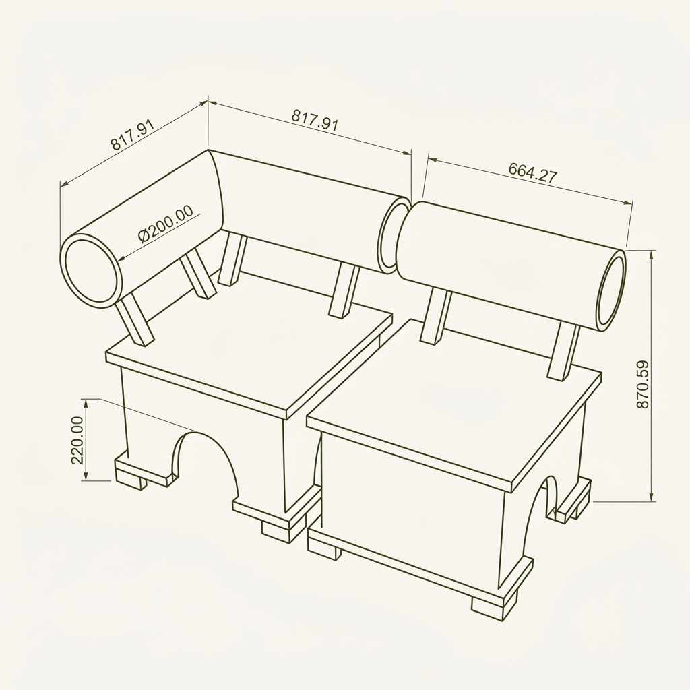
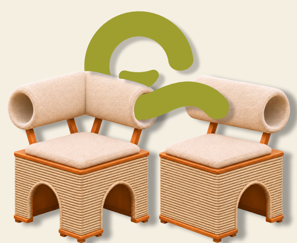

Querencia —
Sistema modular de mobiliario para la convivencia humano felino, con asiento, refugio y paneles de rascado reemplazables, en cedro sobre una retícula de 60 × 60 cm.
Etapa Inicial — Detección y Enfoque
La fractura entre diseño residencial y bienestar felino
El mobiliario contemporáneo expulsa los accesorios para mascotas hacia soluciones postizas de plástico, cartón desechable o postes de sisal de baja durabilidad estética. Existe una profunda falta de articulación entre la calidez estética del hogar y el comportamiento etológico del gato (necesidad de refugio perimetral, altura y penumbra controlada).
Coexistencia Simbiótica
Transformar el volumen pasivo de los asientos modulares residenciales en micro-arquitecturas porosas permeables: un volumen cúbico exterior para reposo humano con una caverna inferior alistonada que ofrece privacidad acústica y visual para el animal.
Metas de Desempeño
- check_circle General: Concebir un mueble modular articulado que sirva de asiento auxiliar y guarida táctil sin saturar el espacio.
- check_circle Específico 1: Módulos de 60 cm interconectables en L, línea recta o isla central.
- check_circle Específico 2: Arcos túnel de 22 cm con celosía filtrante para control térmico y sensorial.
Modularidad fluida, tránsito felino continuo a través de aperturas en arco, asiento acolchado desenfundable y fácil higienización interior.
Paleta botánica serena, maderas de veta limpia, texturas bouclé crudas sin estridencias y proporciones isométricas de calma visual.
Cedro macizo de bosques certificados, manufactura ebanista digitalizada CNC y ensamble de piezas por encastres machihembrados.
Proceso Creativo — Despiece Axonométrico

Módulo Recto — Cotas y Alturas
Unidad estándar con túnel pasante de 20 cm

Cubo de 40 cm de altura compuesto por 24 listones verticales de 22x38 mm. Los arcos gemelos de 35 cm facilitan el tránsito felino y promueven la ventilación cruzada.
Conjunto Modular 'L' — Vista Isométrica Acotada
Integración del módulo angular y módulo recto con cotas normalizadas de ensamble


Paleta Botánica & Bodegón Táctil
Selección rigurosa de materiales de procedencia ética concebidos para soportar interacción de garras sin deshilachado, mientras transmiten serenidad atemporal en el hábitat moderno.
Selección — Ergonomía y Viabilidad
Justificación Estética
Armonía volumétrica lograda mediante el ritmo de listones paralelos. La celosía tamiza la luz interior creando una atmósfera de semipenumbra natural que relaja al felino mientras expone una textura arquitectónica sobria al exterior.
Viabilidad Fabril
Estandarización por caja cúbica unificada de 65 cm. El 80% de los componentes alistonados comparte idéntica sección (22×38 mm), reduciendo merma en fresadora CNC y optimizando el tiempo de corte por lote.
Datos Duros y Métricas
Ensayos mecánicos aplicados al textil y estructura validan su resistencia ante cargas mixtas estáticas y dinámicas.
Lenguaje Pertinente
Semántica basada en la 'querencia' — el lugar íntimo donde el animal y la persona se recogen con confianza. Desplaza los códigos tradicionales de zootecnia hacia un producto de alto valor coleccionable.
Compatibilidad Biomecánica Humano-Felina
A 47 cm del suelo, el asiento facilita el apoyo lumbar a 104° para personas, mientras la cámara inferior de 35 cm de altura ofrece altura suficiente para el estiramiento axial del gato sin compresión dorsal.
Análisis Comercial — Viabilidad Económica
Diseño Consciente & 'Pet Parents'
Consumidores de 28 a 52 años en núcleos metropolitanos que valoran la decoración de autor, la sustentabilidad y consideran al felino un miembro nuclear del hogar digno de confort espacial.
Fabricación Bajo Demanda
Célula de producción en talleres locales de proximidad. Evita el sobrealmacenamiento y minimiza la huella de carbono con envíos de módulos en paquetes planos optimizados.
Estructura Comercial
Compromiso Biofílico y Trazabilidad Forestal
Por cada juego de módulos Querencia comercializado, se reforesta un ejemplar de fresno en áreas degradadas de la cuenca mediterránea.